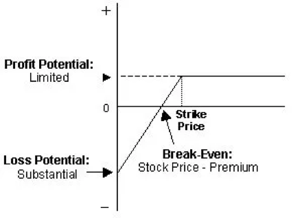

5. OPTIONS & FUTURES¶
5.1. Options vs. Futures: What’s the Difference?¶
5.1.1. Options vs. Futures: An Overview¶
Options and futures are both financial products that investors use to make money or to hedge current investments. Both are agreements to buy an investment at a specific price by a specific date.
An option gives an investor the right, but not the obligation, to buy (or sell) shares at a specific price at any time, as long as the contract is in effect.
A futures contract requires a buyer to purchase shares, and a seller to sell them, on a specific future date unless the holder’s position is closed before the expiration date.
The options and futures markets are very different, however, in how they work and how risky they are to the investor.
5.1.2. Call Options and Put Options¶
There are only two kinds of options: call options and put options. A call option is an offer to buy a stock at a specific price, called a strike price, before the agreement expires. A put option is an offer to sell a stock at a specific price.
In either case, options are a derivative form of investment. They are offers to buy or offers to sell shares but don’t represent actual ownership of the underlying investments until the agreement is finalized.
As an example, say an investor opens a call option to buy stock XYZ at a $50 strike price sometime within the next three months. The stock is currently trading at $49. If the stock jumps to $60, the call buyer can exercise the right to buy the stock at $50. That buyer can then immediately sell the stock for $60 for a $10 profit per share.
Alternatively, the option buyer can simply sell the call and pocket the profit, since the call option is worth $10 per share.
If the option is trading below $50 at the time the contract expires, the option is worthless. The call buyer loses the upfront payment for the option, called the premium.
5.1.3. The Risks of Options¶
The risk to the buyer of a call option is limited to the premium paid up front. This premium rises and falls throughout the life of the contract. It is based on a number of factors, including how far the strike price is from the current underlying security’s price as well as how much time remains on the contract. This premium is paid to the investor who opened the put option, also called the option writer.
The option writer is on the other side of the trade. This investor has unlimited risk. Assume in this example that the stock goes up to $100. The option writer would be forced to buy the shares at $100 per share in order to sell them to the call buyer for $50 a share. In return for a small premium, the option writer is losing $50 per share.
Either the option buyer or the option writer can close their positions at any time by buying a call option, which brings them back to flat. The profit or loss is the difference between the premium received and the cost to buy back the option or get out of the trade.
5.1.4. Put Option¶
A put option is the right to sell shares at the strike price at or before expiry. A trader buying this option hopes the price of the underlying stock will fall.
For example, if an investor owns a put option to sell XYZ at $100, and XYZ’s price falls to $80 before the option expires, the investor will gain $20 per share, minus the cost of the premium. If the price of XYZ is above $100 at expiration, the option is worthless and the investor loses the premium paid up front.
Either the put buyer or the writer can close out their option position to lock in a profit or loss at any time before its expiration. This is done by buying the option, in the case of the writer, or selling the option, in the case of the buyer. The put buyer may also choose to exercise the right to sell at the strike price.
5.1.5. Futures Contracts¶
A futures contract is the obligation to sell or buy an asset at a later date at an agreed price.
Futures are most understandable when considered in terms of commodities such as corn or oil. Futures contracts are a true hedge investment. A farmer might want to lock in an acceptable price up front in case of market prices fall before the crop can be delivered. The buyer wants to lock in a price up front, too, in case of prices soar by the time the crop is delivered.
Assume two traders agree to a $50 per barrel price on an oil futures contract. If the price of oil moves up to $55, the buyer of the contract is making $5 per barrel. The seller, on the other hand, is losing out on a better deal.
5.1.6. Who Trades Futures?¶
There’s a big difference between institutional and retail traders in the futures market.
Futures were invented for institutional buyers. These dealers intend to actually take possession of barrels of crude oil to sell to refiners, or tons of corn to sell to supermarket distributors. Establishing a price in advance makes the businesses on both sides of the contract less vulnerable to big price swings.
Retail buyers, however, buy and sell futures contracts as a bet on the price direction of the underlying security. They want to profit from changes in the price of futures, up or down. They do not intend to actually take possession of any products.
The market for futures has expanded greatly beyond oil and corn. Stock futures can be purchased on individual stocks or on an index like the S&P 500.
In any case, the buyer of a futures contract is not required to pay the full amount of the contract up front. A percentage of the price called an initial margin is paid.
For example, an oil futures contract is for 1,000 barrels of oil. An agreement to buy an oil futures contract at $100 represents the equivalent of a $100,000 agreement. The buyer may be required to pay several thousand dollars for the contract and may owe more if that bet on the direction of the market proves to be wrong.
5.1.7. Futures Are Bigger Bets¶
Options are risky, but futures are riskier for the individual investor.
A standard option contract is for 100 shares of stock. If the underlying stock is trading at $30, then the total stake is $3,000. A standard gold contract is 100 ounces of gold. If gold is trading at $1,300 per ounce, the contract represents $130,000. Options contracts are smaller by default, although an investor can buy multiple contracts.
5.1.8. Futures Are Riskier¶
When an investor buys a stock option, the only financial liability is the cost of the premium at the time the contract is purchased. However, when a seller opens a put option, that seller is exposed to the maximum liability of the stock’s underlying price. If a put option gives the buyer the right to sell the stock at $50 per share but the stock falls to $10, the person who initiated the contract must agree to purchase the stock for the value of the contract, or $50 per share.
Important
Futures contracts tend to be for large amounts of money. The obligation to sell or buy at a given price makes futures riskier by their nature.
Futures contracts, however, involve maximum liability to both the buyer and the seller. As the underlying stock price moves, either party to the agreement may have to deposit more money into their trading accounts to fulfill a daily obligation.
This is because gains on futures positions are automatically marked to market daily, meaning the change in the value of the positions, up or down, is transferred to the futures accounts of the parties at the end of every trading day.
5.1.9. Options Are Optional¶
Investors who purchase call or put options have the right to buy or sell a stock at a specific strike price. However, they are not obligated to exercise the option at the time the contract expires. Options investors only exercise contracts when they are in the money, meaning that the option has some intrinsic value.
Purchasers of futures contracts are obligated to buy the underlying stock from the seller of the contract upon expiration no matter what the price of the underlying asset is.
5.1.10. Example of an Options Contract¶
To complicate matters, options are bought and sold on futures. But that allows for an illustration of the differences between options and futures.
In this example, one options contract for gold on the Chicago Mercantile Exchange has as its underlying asset one COMEX gold futures contract.
An options investor might purchase a call option for a premium of $2.60 per contract with a strike price of $1,600 expiring in February 2019.
The holder of this call has a bullish view on gold and has the right to assume the underlying gold futures position until the option expires after market close on February 22, 2019. If the price of gold rises above the strike price of $1,600, the investor will exercise the right to buy the futures contract. Otherwise, the investor will allow the options contract to expire. The maximum loss is the $2.60 premium paid for the contract.
5.1.11. Example of a Futures Contract¶
The investor may instead decide to buy a futures contract on gold. One futures contract has as its underlying asset 100 troy ounces of gold.
That means the buyer is obligated to accept 100 troy ounces of gold from the seller on the delivery date specified in the futures contract. Assuming the trader has no interest in actually owning the gold, the contract will be sold before the delivery date or rolled over to a new futures contract.
As the price of gold rises or falls, the amount of gain or loss is credited or debited to the investor’s account at the end of each trading day.
If the price of gold in the market falls below the contract price the buyer agreed to, the futures buyer is still obligated to pay the seller the higher contract price on the delivery date.
5.1.12. Other Differences¶
Options and futures may sound similar, but they are very different. Futures markets are easier to understand but carry considerable risk due to the size of many of the contracts.
Buying options can be quite complex, but the risk is capped to the premium paid. Options writers assume more risk. In fact, options writing is best left to experienced options traders.
KEY TAKEAWAYS
Options and futures are similar trading products that provide investors with the chance to make money and hedge current investments.
An option gives the buyer the right, but not the obligation, to buy (or sell) an asset at a specific price at any time during the life of the contract.
A futures contract gives the buyer the obligation to purchase a specific asset, and the seller to sell and deliver that asset at a specific future date unless the holder’s position is closed prior to expiration.
5.2. Options Trading Strategies: A Guide for Beginners¶
Options are conditional derivative contracts that allow buyers of the contracts (option holders) to buy or sell a security at a chosen price. Option buyers are charged an amount called a “premium” by the sellers for such a right. Should market prices be unfavorable for option holders, they will let the option expire worthless, thus ensuring the losses are not higher than the premium. In contrast, option sellers (option writers) assume greater risk than the option buyers, which is why they demand this premium.
Options are divided into “call” and “put” options. With a call option, the buyer of the contract purchases the right to buy the underlying asset in the future at a predetermined price, called exercise price or strike price. With a put option, the buyer acquires the right to sell the underlying asset in the future at the predetermined price.
5.2.1. Why Trade Options Rather Than a Direct Asset?¶
There are some advantages to trading options. The Chicago Board of Options Exchange (CBOE) is the largest such exchange in the world, offering options on a wide variety of single stocks, ETFs and indexes. Traders can construct option strategies ranging from buying or selling a single option to very complex ones that involve multiple simultaneous option positions.
The following are basic option strategies for beginners.
- Buying Calls (Long Call)
This is the preferred strategy for traders who:
Are “bullish” or confident on a particular stock, ETF or index and want to limit risk
Want to utilize leverage to take advantage of rising prices
Options are leveraged instruments, i.e., they allow traders to amplify the benefit by risking smaller amounts than would otherwise be required if trading the underlying asset itself. A standard option contract on a stock controls 100 shares of the underlying security.
Suppose a trader wants to invest $5,000 in Apple (AAPL), trading around $165 per share. With this amount, he or she can purchase 30 shares for $4,950. Suppose then that the price of the stock increases by 10% to $181.50 over the next month. Ignoring any brokerage, commission or transaction fees, the trader’s portfolio will rise to $5,445, leaving the trader with a net dollar return of $495, or 10% on the capital invested.
Now, let’s say a call option on the stock with a strike price of $165 that expires about a month from now costs $5.50 per share or $550 per contract. Given the trader’s available investment budget, he or she can buy nine options for a cost of $4,950. Because the option contract controls 100 shares, the trader is effectively making a deal on 900 shares. If the stock price increases 10% to $181.50 at expiration, the option will expire in the money and be worth $16.50 per share ($181.50-$165 strike), or $14,850 on 900 shares. That’s a net dollar return of $9,990, or 200% on the capital invested, a much larger return compared to trading the underlying asset directly.
Risk/Reward: The trader’s potential loss from a long call is limited to the premium paid. Potential profit is unlimited, as the option payoff will increase along with the underlying asset price until expiration, and there is theoretically no limit to how high it can go.

- Buying Puts (Long Put)
This is the preferred strategy for traders who:
Are bearish on a particular stock, ETF or index, but want to take on less risk than with a short-selling strategy
Want to utilize leverage to take advantage of falling prices
A put option works the exact opposite way a call option does, with the put option gaining value as the price of the underlying decreases. While short-selling also allows a trader to profit from falling prices, the risk with a short position is unlimited, as there is theoretically no limit on how high a price can rise. With a put option, if the underlying rises past the option’s strike price, the option will simply expire worthlessly.
Risk/Reward: Potential loss is limited to the premium paid for the options. The maximum profit from the position is capped since the underlying price cannot drop below zero, but as with a long call option, the put option leverages the trader’s return.

- Covered Call
This is the preferred position for traders who:
Expect no change or a slight increase in the underlying’s price
Are willing to limit upside potential in exchange for some downside protection
A covered call strategy involves buying 100 shares of the underlying asset and selling a call option against those shares. When the trader sells the call, he or she collects the option’s premium, thus lowering the cost basis on the shares and providing some downside protection. In return, by selling the option, the trader is agreeing to sell shares of the underlying at the option’s strike price, thereby capping the trader’s upside potential.
Suppose a trader buys 1,000 shares of BP (BP) at $44 per share and simultaneously writes 10 call options (one contract for every 100 shares) with a strike price of $46 expiring in one month, at a cost of $0.25 per share, or $25 per contract and $250 total for the 10 contracts. The $0.25 premium reduces the cost basis on the shares to $43.75, so any drop in the underlying down to this point will be offset by the premium received from the option position, thus offering limited downside protection.
If the share price rises above $46 before expiration, the short call option will be exercised (or “called away”), meaning the trader will have to deliver the stock at the option’s strike price. In this case, the trader will make a profit of $2.25 per share ($46 strike price - $43.75 cost basis).
However, this example implies the trader does not expect BP to move above $46 or significantly below $44 over the next month. As long as the shares do not rise above $46 and get called away before the options expire, the trader will keep the premium free and clear and can continue selling calls against the shares if he or she chooses.
Risk/Reward: If the share price rises above the strike price before expiration, the short call option can be exercised and the trader will have to deliver shares of the underlying at the option’s strike price, even if it is below the market price. In exchange for this risk, a covered call strategy provides limited downside protection in the form of premium received when selling the call option.
- Protective Put
This is the preferred strategy for traders who:
Own the underlying asset and want downside protection.
A protective put is a long put, like the strategy we discussed above; however, the goal, as the name implies, is downside protection versus attempting to profit from a downside move. If a trader owns shares that he or she is bullish on in the long run but wants to protect against a decline in the short run, they may purchase a protective put.
If the price of the underlying increases and is above the put’s strike price at maturity, the option expires worthless and the trader loses the premium but still has the benefit of the increased underlying price. On the other hand, if the underlying price decreases, the trader’s portfolio position loses value, but this loss is largely covered by the gain from the put option position. Hence, the position can effectively be thought of as an insurance strategy.
The trader can set the strike price below the current price to reduce premium payment at the expense of decreasing downside protection. This can be thought of as deductible insurance. Suppose, for example, that an investor buys 1,000 shares of Coca-Cola (KO) at a price of $44 and wants to protect the investment from adverse price movements over the next two months. The following put options are available:
June 2018 options
Premium
$44 put
$1.23
$42 put
$0.47
$40 put
$0.20
The table shows that the cost of protection increases with the level thereof. For example, if the trader wants to protect the investment against any drop in price, he or she can buy 10 at-the-money put options at a strike price of $44 for $1.23 per share, or $123 per contract, for a total cost of $1,230. However, if the trader is willing to tolerate some level of downside risk, he or she can choose less costly out-of-the-money options such as a $40 put. In this case, the cost of the option position will be much lower at only $200.
Risk/Reward: If the price of the underlying stays the same or rises, the potential loss will be limited to the option premium, which is paid as insurance. If, however, the price of the underlying drops, the loss in capital will be offset by an increase in the option’s price and is limited to the difference between the initial stock price and strike price plus the premium paid for the option. In the example above, at the strike price of $40, the loss is limited to $4.20 per share ($44 - $40 + $0.20).
- Other Options Strategies
These strategies may be a little more complex than simply buying calls or puts, but they are designed to help you better manage the risk of options trading:
Covered call strategy or buy-write strategy: Stocks are bought, and the investor sells call options on the same stock. The number of shares you bought should be identical to the number of call options contracts you sold.
Married Put Strategy: After buying a stock, the investor buys put options for an equivalent number of shares. The married put works like an insurance policy against short-term losses call options with a specific strike price. At the same time, you’ll sell the same number of call options at a higher strike price.
Protective Collar Strategy: An investor buys an out-of-the-money put option, while at the same time writing an out-of-the-money call option for the same stock.
Long Straddle Strategy: Investor buys a call option and a put option at the same time. Both options should have the same strike price and expiration date.
Long Strangle Strategy: Investor buys an out-of-the-money call option and a put option at the same time.
They have the same expiration date but they have different strike prices. The put strike price should be below the call strike price.
The Bottom Line
Options offer alternative strategies for investors to profit from trading underlying securities. There’s a variety of strategies involving different combinations of options, underlying assets, and other derivatives. Basic strategies for beginners include buying calls, buying puts, selling covered calls and buying protective puts. There are advantages to trading options rather than underlying assets, such as downside protection and leveraged returns, but there are also disadvantages like the requirement for upfront premium payment. The first step to trading options is to choose a broker. Fortunately, Investopedia has created a list of the best online brokers for options trading to make getting started easier.